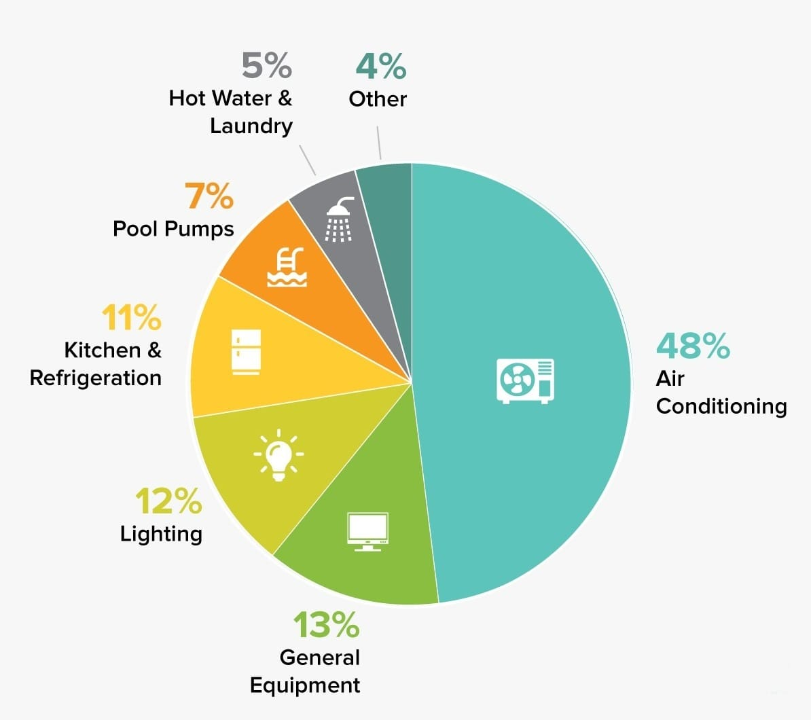

Carbon Footprint

Tourism contributes significantly to global gross domestic product, and is forecast to grow at an annual 4%, thus outpacing many other economic sectors.
However, global carbon emissions related to tourism are currently not well quantified. We quantify tourism-related global carbon flows between 160
countries, and their carbon footprints under origin and destination accounting perspectives.
We find that, between 2009 and 2013, tourism's global carbonfootprint has increased from 3.9 to 4.5Gt CO2, accounting for about 8% of global
greenhouse gas emissions.Transport, shopping and food are significant contributors. The majority of this footprint is exerted by and in high-income countries.
The rapid increase in tourism demand is effectively outstripping the decarbonization of tourism-related technology.
What is carbon footprint?
Transportation
As concern about climate change has grown, individuals are becoming increasingly conscious of their impact on the environment.
Transportation emissions often make up the largest portion of our individual carbon footprints. For that reason, evaluating transport options
is a natural place to start, whether it is for a daily commute or a leisure trip abroad.
The carbon footprint of transportation is measured in grams of carbon dioxide (CO2) equivalents emitted per person to travel one kilometer.
This includes both carbon dioxide and other greenhouse gases.
Flying on a short flight or driving alone are the most carbon-intensive travel methods. However, adding one more passenger to your car ends up cutting the
emissions in half, making driving more efficient.
Specifically, its worth breaking down categories of flights more, as their emissions depend greatly on their route length:
- Short Flights:For example, domestic flights within a European country, or flights within a U.S. state have the highest individual carbon footprint.
- Medium Flights:For example, international travel within Europe, or between U.S. states, have a significantly lower carbon footprint per person.
- Long Flights:Flights over 3,700 km (2,300 mi), about the distance from Los Angeles to New York, have the lowest carbon footprint per person.
Lodging

In the field of the tourism, hotels and homestay facilities account for considerable amounts of energy consumption and CO2 emissions. This study presents an
investigation conducted on the CO2 emissions from four types of hotel in Taiwan.
According to the results, the average CO2 emissions of international touristhotels, standard tourist hotels, general hotels, and homestay facilities are 28.9, 19.2, 12.5, and 6.3 kg-CO2/person-night, respectively. Hotels with higher
service levels produce higher average CO2 emissions per person-night.